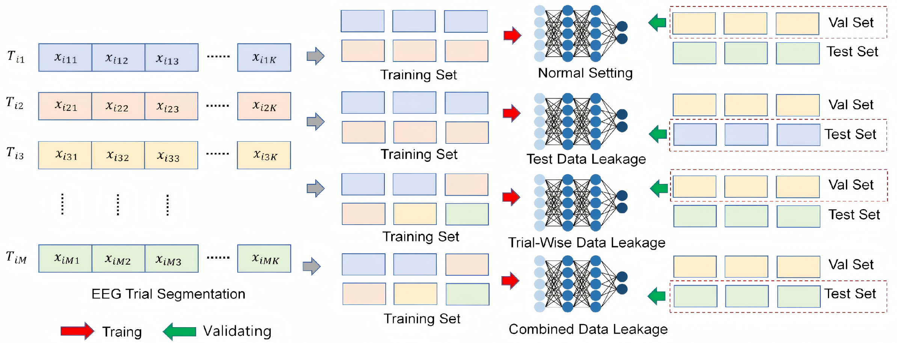
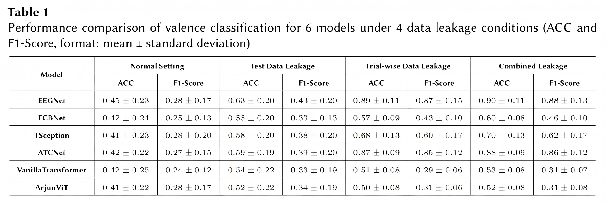
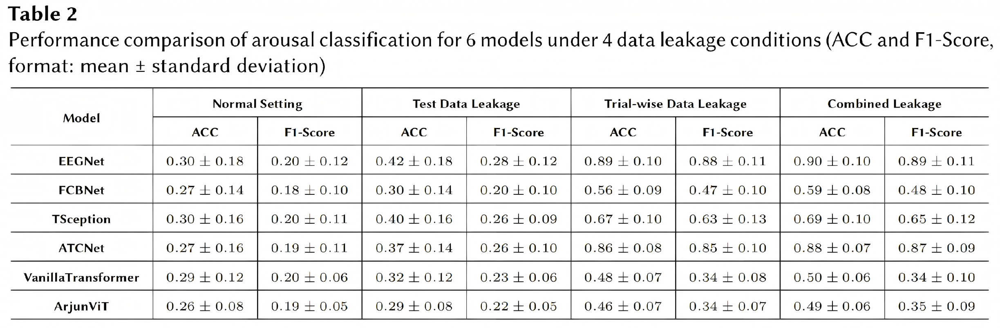
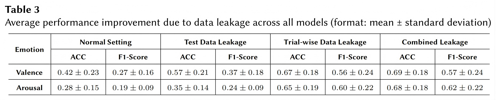
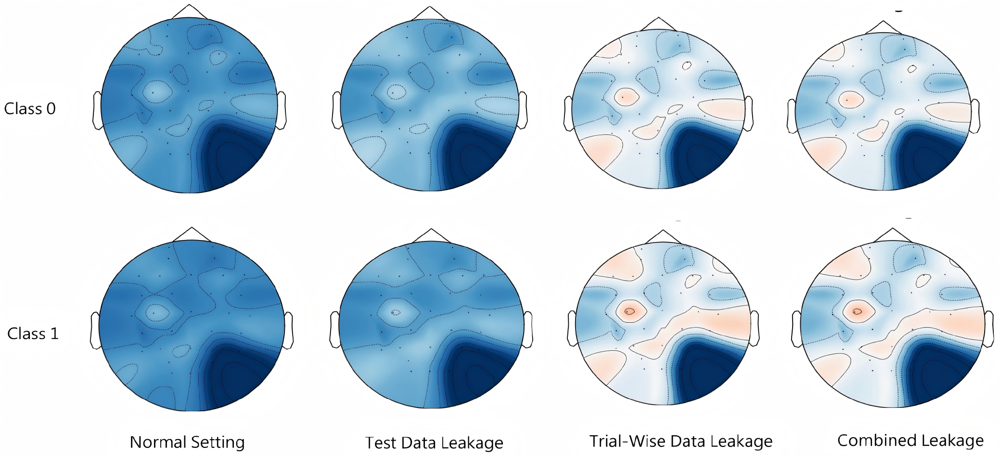

Deep learning-based approaches have significantly advanced emotion recognition technology using electroencephalography (EEG) data. However, data leakage poses a major threat to model generalizability. This paper focuses on analyzing two common leakage patterns, test data leakage (test-set-driven hyperparameter tuning) and trial-wise data leakage (where the same trial segment is split between training and test sets), lead to overestimation of deep learning model performance. We systematically quantify the impact of these two leakage types, applying four data processing approaches to the DEAP dataset: normal setting, test data leakage, trial-wise data leakage, and combined test data and trial-wise leakage. Six representative deep learning models were trained and tested under each data processing condition, maintaining identical other factors across all models to control variables. Experimental results demonstrate that under the three leakage conditions, all six models significantly outperform the normal setting: the minimum improvement in valence classification accuracy reached 35.71%, while the minimum improvement in arousal classification accuracy reached 25.00%. Architectures based on convolutional neural networks (CNN) were most affected, while transformer-based models showed smaller but still significant impacts. Further, visualization of the average intermediate features across all EEG data belonging to each class for these models reveals that data leakage induces significant alterations in brain topography patterns. The severity of performance inflation followed the order: combined leakage > trial-wise data leakage > test data leakage. In summary, our findings underscore the critical importance of implementing rigorous data partitioning protocols and leakage-aware experimental designs in both affective computing and neuroscience research. Only in this way can we ensure that artificial intelligence assists researchers in uncovering genuine scientific laws rather than leading them astray.

Figure 1. Four experimental configurations based on different data partitioning and training strategies are designed, including normal setting, test data leakage, trial-wise leakage, and combined data leakage.

Table 1. Performance comparison of valence classification for 6 models under 4 data leakage conditions (ACC and F1-Score, format: mean ± standard deviation)

Table 2. Performance comparison of arousal classification for 6 models under 4 data leakage conditions (ACC and F1-Score, format: mean ± standard deviation)

Table 3. Average performance improvement due to data leakage across all models (format: mean ± standard deviation)

Figure 2. Impact of data leakage on visualization analysis of EEG features from TSception model on valence classification (Class 0: Valence [1,3], Class 1: Valence [4,6]).
@inproceedings{lei2025impact,
title={Impact of Trial-wise and Test Data Leakage on EEG-Based Emotion Classification},
author={Lei, Peihong and Wu, Mengyao and Yi, Wenjun and Mo, Hanlin},
booktitle={Proceedings of the 1st Workshop on 4D Micro-Expression Recognition (4DMR 2025) at IJCAI 2025},
series={CEUR Workshop Proceedings},
volume={4115},
pages={69--77},
year={2025},
publisher={CEUR-WS.org},
url={https://ceur-ws.org/Vol-4115/paper7.pdf}
}